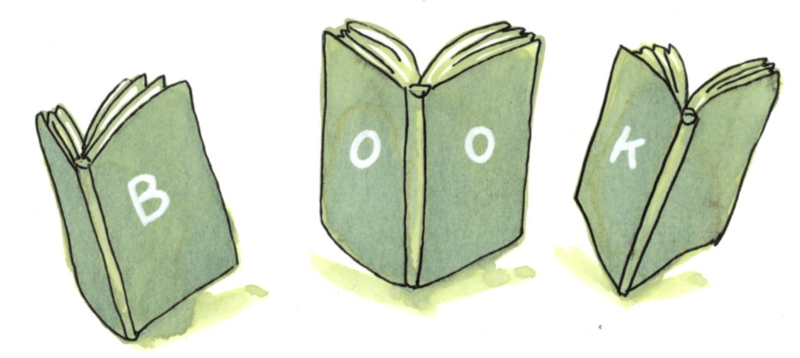

About Me
I was born and raised in the forests of Eastern Finland, where I entertained myself by learning how to write before I could read. One of my first written words was “Spede”; the name of an iconic recession-era TV show host. I also played a variety of musical instruments, and my road to translation probably began when I tried to figure out what English songs were all about.
I majored in English language and literature at the University of Eastern Finland with minors in Finnish as a second language, German language and literature, and Cultural anthropology. I also taught both English for Academic Purposes and Finnish as a Second Language through the university’s Language Centre, and in the evenings, I taught Finnish for immigrants at the community college and translated documents from Finnish to English and vice versa.

After I moved to the United States and discovered that learning Finnish was not in as great a demand as it had been back home, I leaned even more into my booknerdery by obtaining a certificate in copyediting, which also led me to translating fiction. After a decade plus long detour into the video game industry, where I worked as an in-house translator, editor, and technical writer, I returned to teaching Finnish and to translating Finnish fiction into English so that I can better serve as a conduit between cultures and languages.
Besides the written word, I love visual communication and storytelling in the form of comics, zines, and sketch notes. If you’re interested, please visit my Substack for up-to-date illustrated projects.